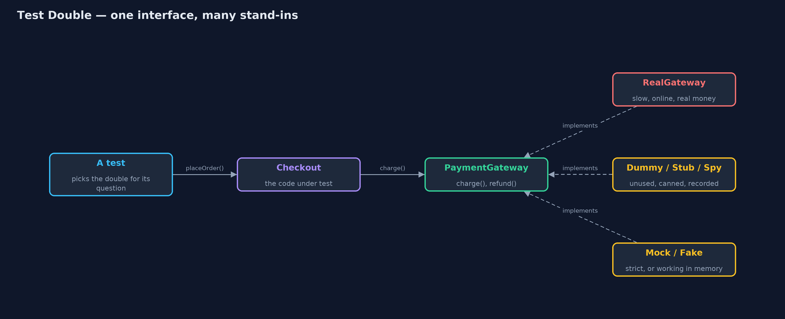
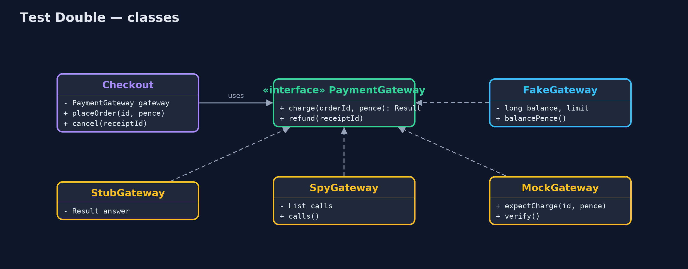
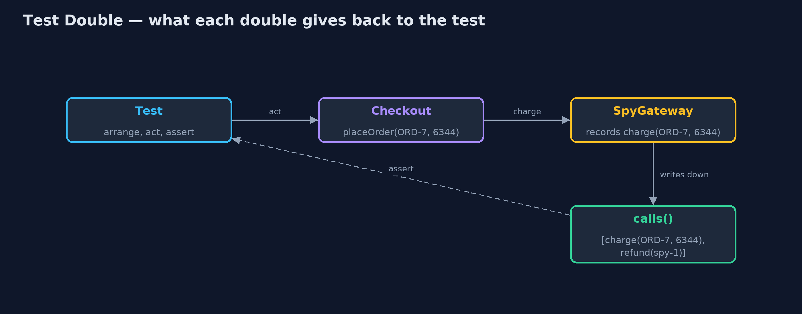
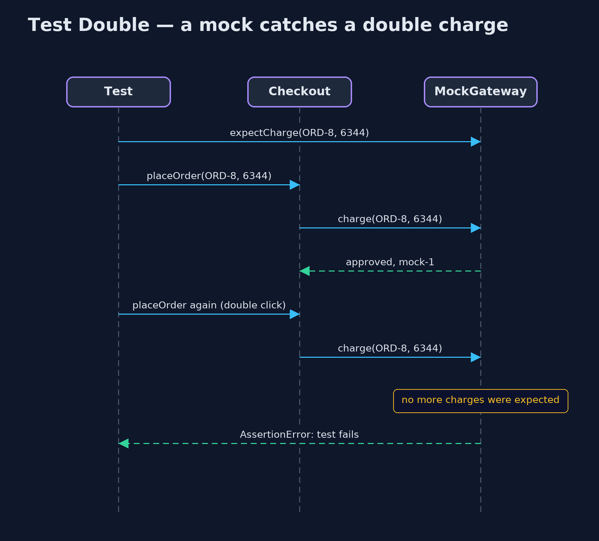

Test Double Pattern
src/main/java/com/jk/explore/testdouble/
├── Checkout.java The code under test: turns a basket total into a paid order, or explains why not
├── DummyGateway.java A dummy: passed in only because the constructor needs something, and never meant to be used
├── FakeGateway.java A fake: a small, working payment provider that keeps its ledger in memory instead of at a bank
├── MockGateway.java A mock: told in advance exactly which calls to expect, it fails at once on anything else
├── PaymentGateway.java What checkout needs from a payment provider: take money, and give it back
├── RealGateway.java A stand-in for the real provider as a test would meet it: slow, needs the network, and charges real money
├── SpyGateway.java A spy: answers like a stub, and also writes down every call so the test can check them afterwards
├── StubGateway.java A stub: gives a canned answer to every call, so a test can steer checkout down one path
└── TestDoubleDemo.java The six acts: the real provider, then a dummy and a stub, a spy, a mock, a fake, and the billA test double stands in for something your code depends on, so a test can run fast, offline, without real money, and ask exactly the question it needs.
Checkout pays through a payment provider. Testing checkout against the real provider is slow, needs the network, and charges real money. A test double is an object that takes the provider's place in a test. The name comes from the film industry's stunt double.
There are five kinds, each good for one question:
| Kind | What it does | The question it answers |
|---|---|---|
| Dummy | Is passed in but must never be used; fails if it is | "Does this path leave the provider alone?" |
| Stub | Gives a canned answer | "What does checkout do when the card is declined?" |
| Spy | Answers, and records every call | "Did checkout charge the right amount, once?" |
| Mock | Is told the exact calls to expect, and fails at the first surprise | "Is anything charged twice?" |
| Fake | A small working version, in memory | "Does pay, cancel, pay again work end to end?" |
This project writes all five by hand, in a few lines each, so you can see that a mocking library (Mockito and friends) is only a shortcut for writing them.
The idea in everyday terms
On a film set, the actor does not jump off the roof. A stunt double does: same costume, same shape on camera, but trained for the fall. For the lighting check, the crew uses a stand-in who just stands on the mark. For a car crash, a crash-test dummy.
Each stand-in fits one job, and nobody confuses them with the actor. A test double is the same idea for code: something that looks like the payment provider to checkout, so the test can do what would be slow, costly or dangerous with the real one.
The scenario
The online store's Checkout turns a basket total into a paid order through a PaymentGateway interface. The real gateway talks to a card provider over the network. The team wants tests that run in milliseconds, work on a train, never charge a real card, and can make the card decline on demand.
Run
./gradlew runThe demo tells the story in 6 acts, each printing exact numbers that the tests check:
| Act | What it shows |
|---|---|
| 1. The real provider | Three tests take 2400 ms of network calls and charge £88.42 of real money; offline, a test fails though the code is fine. |
| 2. A dummy and a stub | A dummy proves an empty basket never pays; a stub makes the card decline on demand. |
| 3. A spy | The spy records charge(ORD-7, 6344) then refund(spy-1): the exact amount, once, then the refund. |
| 4. A mock | Told to expect one charge, the mock passes it, then fails at once on a double-click second charge. |
| 5. A fake | An in-memory provider with a £100 limit: pay £63.44, decline £50, cancel, pay £50, balance £50.00. |
| 6. The bill | A pounds-for-pence bug passes with a stub and is caught by a spy; no double proves the real provider still works. |
Test
./gradlew test13 tests in CheckoutTest, DemoRunsTest. Every number the demo prints is asserted, and nothing depends on the clock, so every run gives the same result.
Technologies and versions
| Technology | Version | Used for |
|---|---|---|
| Java | 21 | the code (toolchain set in build.gradle) |
| Gradle | 9.2.1 (wrapper) | build and run, nothing to install |
| JUnit | 5.10.2 | the tests |
| videokit | repository tool | the narrated video and animation: Piper en_US-amy-medium, speed 0.8, longer pauses (the approved amy-slow voice) |
Learning Material
| Document | What it is for |
|---|---|
| Problem statement | the situation and what the project must show |
| Prerequisites | what you need to know first |
| Test Double, explained | the acts in prose |
| Session guide | a one-hour lesson with exercises |
| Animated walkthrough | the acts step by step, narrated |
| Spec | what this project must be true of |
The pattern in one picture
Checkout only knows the PaymentGateway interface, so a test can put any stand-in behind it.

Where each piece sits
Five doubles, each a few lines, all implementing the same interface.

How the data moves
Stubs and fakes feed answers in; spies and mocks carry what happened back out to the test.

Who calls whom, in order
The mock expected one charge; the second one fails the test at the moment it happens.

Video
video/test-double-pattern-explained.mp4 (with .m4a audio and .srt subtitles) is built by video/build_video.sh. Rendered media is not committed.
What it costs
- A double only checks what you told it to. Act six: a stub says "approved" to anything, so a checkout that charges 63 pence instead of £63.44 passes.
- Doubles can drift from the real thing. If the real provider changes its answers, every double is quietly out of date. Keep at least one test against the real provider (or its sandbox).
- Mocks tie tests to how code works, not what it achieves. A mock that expects exact calls breaks when the code is rearranged, even if the customer sees the same result.
- More code to maintain, unless a library writes the doubles for you.
When this is too much
For code with no awkward dependency (pure calculations, like the Money class) you need no double at all: call it and check the answer. And don't replace things you own and that are fast (a list, a small value object) with doubles; use the real ones.
Where you have already met this
- Mockito's
mock(),when(...).thenReturn(...)(a stub) andverify(...)(spy-style checks). - Spring's
@MockBean, and in-memory databases such as H2 used as fakes. - Payment sandboxes (Stripe test mode): a fake that the provider runs for you.
- Testcontainers: the other way round, a real database in a container instead of a double.
Where this sits
This is the first project in testing-design-patterns. It uses the checkout from the rest of the course; the pattern under test is simply "checkout pays through an interface", which almost every project here has.